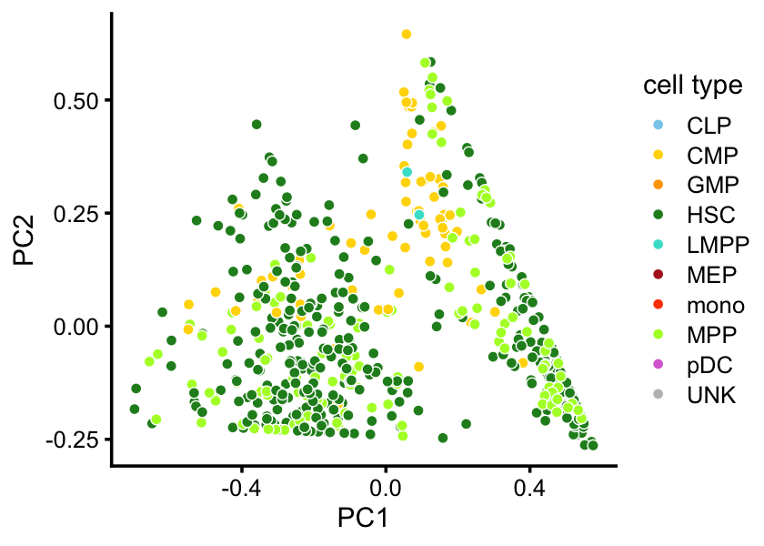
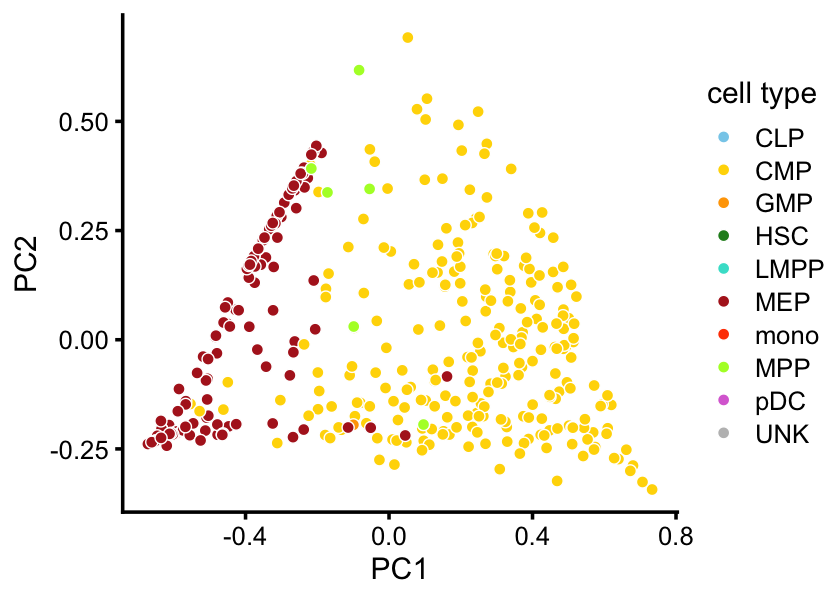

Visualize results of topic modeling in single-cell hematopoietic cells
Peter Carbonetto
Last updated: 2020-11-09
Checks: 7 0
Knit directory: scATACseq-topics/
This reproducible R Markdown analysis was created with workflowr (version 1.6.2.9000). The Checks tab describes the reproducibility checks that were applied when the results were created. The Past versions tab lists the development history.
Great! Since the R Markdown file has been committed to the Git repository, you know the exact version of the code that produced these results.
Great job! The global environment was empty. Objects defined in the global environment can affect the analysis in your R Markdown file in unknown ways. For reproduciblity it’s best to always run the code in an empty environment.
The command set.seed(20200729) was run prior to running the code in the R Markdown file. Setting a seed ensures that any results that rely on randomness, e.g. subsampling or permutations, are reproducible.
Great job! Recording the operating system, R version, and package versions is critical for reproducibility.
Nice! There were no cached chunks for this analysis, so you can be confident that you successfully produced the results during this run.
Great job! Using relative paths to the files within your workflowr project makes it easier to run your code on other machines.
Great! You are using Git for version control. Tracking code development and connecting the code version to the results is critical for reproducibility.
The results in this page were generated with repository version 6827a74. See the Past versions tab to see a history of the changes made to the R Markdown and HTML files.
Note that you need to be careful to ensure that all relevant files for the analysis have been committed to Git prior to generating the results (you can use wflow_publish or wflow_git_commit). workflowr only checks the R Markdown file, but you know if there are other scripts or data files that it depends on. Below is the status of the Git repository when the results were generated:
Ignored files:
Ignored: data/Cusanovich_2018.RData
Ignored: output/fit-Cusanovich2018-scd-ex-k=10.rds
Untracked files:
Untracked: data/Buenrostro_2018_counts.RData
Untracked: output/Buenrostro_2018/
Untracked: output/fit-Buenrostro2018-binarized-scd-ex-k=9.rds
Untracked: output/fit-Buenrostro2018-scd-ex-k=10.rds
Untracked: output/fit-Buenrostro2018-scd-ex-k=15.rds
Untracked: output/fit-Buenrostro2018-scd-ex-k=9.rds
Untracked: output/fit-Cusanovich2018-scd-ex-k=13.rds
Note that any generated files, e.g. HTML, png, CSS, etc., are not included in this status report because it is ok for generated content to have uncommitted changes.
These are the previous versions of the repository in which changes were made to the R Markdown (analysis/explore_hema_topics.Rmd) and HTML (docs/explore_hema_topics.html) files. If you’ve configured a remote Git repository (see ?wflow_git_remote), click on the hyperlinks in the table below to view the files as they were in that past version.
| File | Version | Author | Date | Message |
|---|---|---|---|---|
| Rmd | 6827a74 | Peter Carbonetto | 2020-11-09 | Converting explore_hema_topics analysis to R Markdown. |
Load some packages used in the analysis below, and set the seed.
library(Matrix)
library(dplyr)
Attaching package: 'dplyr'The following objects are masked from 'package:stats':
filter, lagThe following objects are masked from 'package:base':
intersect, setdiff, setequal, unionlibrary(fastTopics)
library(ggplot2)
library(cowplot)
********************************************************Note: As of version 1.0.0, cowplot does not change the default ggplot2 theme anymore. To recover the previous behavior, execute:
theme_set(theme_cowplot())********************************************************set.seed(1)Load the fragment counts and cell population labels.
load("data/Buenrostro_2018_counts.RData")
samples <- transform(samples,label = factor(label))Load the \(k = 11\) Poisson NMF model fit.
fit <- readRDS(file.path("output/Buenrostro_2018/unbinarized",
"fit-Buenrostro2018-scd-ex-k=11.rds"))$fitPerform PCA on the topic proportions, and use these PCs to define clusters.
pca <- prcomp(poisson2multinom(fit)$L)$x
x <- rep("A",nrow(pca))
pc1 <- pca[,1]
pc2 <- pca[,2]
pc3 <- pca[,3]
pc4 <- pca[,4]
pc5 <- pca[,5]
pc6 <- pca[,6]
pc8 <- pca[,8]
x[pc1 < 0.1] <- "B"
x[pc2 < -0.2] <- "C"
x[pc3 > 0.35] <- "pDC"
x[pc3 < -0.1 & pc4 < 0.05] <- "GMP"
x[pc4 > 0.55] <- "CLP"
x[pc5 < -0.25 & pc6 < -0.25] <- "mono"
x[pc8 > 0.35] <- "U"
samples$cluster <- factor(x)table(samples$label,samples$cluster)
A B C CLP GMP mono pDC U
CLP 0 20 0 58 0 0 0 0
CMP 66 148 245 0 41 0 0 2
GMP 0 111 1 1 277 0 2 10
HSC 343 4 0 0 0 0 0 0
LMPP 2 157 0 0 1 0 0 0
MEP 0 1 137 0 0 0 0 0
mono 0 0 0 0 1 63 0 0
MPP 125 11 6 0 0 0 0 0
pDC 0 5 0 0 0 0 136 0
UNK 0 2 0 0 1 0 0 57Project the cells—other than the “unknown” cluster—onto the top two PCs.
facs_colors <- c("skyblue", # CLP
"gold", # CMP
"orange", # GMP
"forestgreen", # HSC
"turquoise", # LMPP
"firebrick", # MEP
"orangered", # mono
"greenyellow", # MPP
"orchid", # pDC
"gray") # unknown
rows <- which(samples$cluster != "U")
fit2 <- select(poisson2multinom(fit),loadings = rows)
p1 <- pca_plot(fit2,pcs = 1:2,fill = samples[rows,"label"]) +
scale_fill_manual(values = facs_colors) +
labs(fill = "cell type")Scale for 'fill' is already present. Adding another scale for 'fill', which
will replace the existing scale.p2 <- pca_plot(fit2,pcs = 3:4,fill = samples[rows,"label"]) +
scale_fill_manual(values = facs_colors) +
labs(fill = "cell type")Scale for 'fill' is already present. Adding another scale for 'fill', which
will replace the existing scale.plot_grid(p1,p2)
Create a Structure plot.
topic_colors <- c("greenyellow",
"yellow", # CMP
"gold", # CMP
"orchid", # pDC
"orangered", # mono
"firebrick", # MEP
"orange", # GMP
"skyblue", # CLP
"gray", # U
"forestgreen", # HSC + MPP
"turquoise") # LMPP
topics <- c(2,9,8,4,5,3,11,1,7,6,10)
p3 <- structure_plot(poisson2multinom(fit),topics = topics,
colors = topic_colors[topics],
grouping = samples$cluster,gap = 20,
num_threads = 4,verbose = FALSE)Perplexity automatically changed to 18 because original setting of 100 was too large for the number of samples (58)Perplexity automatically changed to 19 because original setting of 100 was too large for the number of samples (62)Perplexity automatically changed to 44 because original setting of 100 was too large for the number of samples (136)Perplexity automatically changed to 21 because original setting of 100 was too large for the number of samples (68)print(p3)Plot cluster A.
rows <- which(samples$cluster == "A")
fit2 <- select(poisson2multinom(fit),loadings = rows)
p4 <- pca_plot(fit2,fill = samples$label[rows,drop = FALSE]) +
scale_fill_manual(values = facs_colors,drop = FALSE) +
labs(fill = "cell type")Scale for 'fill' is already present. Adding another scale for 'fill', which
will replace the existing scale.print(p4)
Plot cluster C.
rows <- which(samples$cluster == "C")
fit2 <- select(poisson2multinom(fit),loadings = rows)
p5 <- pca_plot(fit2,fill = samples$label[rows,drop = FALSE]) +
scale_fill_manual(values = facs_colors,drop = FALSE) +
labs(fill = "cell type")Scale for 'fill' is already present. Adding another scale for 'fill', which
will replace the existing scale.print(p5)
sessionInfo()R version 3.6.2 (2019-12-12)
Platform: x86_64-apple-darwin15.6.0 (64-bit)
Running under: macOS Catalina 10.15.7
Matrix products: default
BLAS: /Library/Frameworks/R.framework/Versions/3.6/Resources/lib/libRblas.0.dylib
LAPACK: /Library/Frameworks/R.framework/Versions/3.6/Resources/lib/libRlapack.dylib
locale:
[1] en_US.UTF-8/en_US.UTF-8/en_US.UTF-8/C/en_US.UTF-8/en_US.UTF-8
attached base packages:
[1] stats graphics grDevices utils datasets methods base
other attached packages:
[1] cowplot_1.0.0 ggplot2_3.3.0 fastTopics_0.3-184
[4] dplyr_0.8.3 Matrix_1.2-18 workflowr_1.6.2.9000
loaded via a namespace (and not attached):
[1] ggrepel_0.9.0 Rcpp_1.0.5 lattice_0.20-38 tidyr_1.0.0
[5] prettyunits_1.1.1 assertthat_0.2.1 zeallot_0.1.0 rprojroot_1.3-2
[9] digest_0.6.23 R6_2.4.1 backports_1.1.5 MatrixModels_0.4-1
[13] evaluate_0.14 coda_0.19-3 httr_1.4.2 pillar_1.4.3
[17] rlang_0.4.5 progress_1.2.2 lazyeval_0.2.2 data.table_1.12.8
[21] irlba_2.3.3 SparseM_1.78 whisker_0.4 rmarkdown_2.3
[25] labeling_0.3 Rtsne_0.15 stringr_1.4.0 htmlwidgets_1.5.1
[29] munsell_0.5.0 compiler_3.6.2 httpuv_1.5.2 xfun_0.11
[33] pkgconfig_2.0.3 mcmc_0.9-6 htmltools_0.4.0 tidyselect_0.2.5
[37] tibble_2.1.3 quadprog_1.5-8 viridisLite_0.3.0 crayon_1.3.4
[41] withr_2.1.2 later_1.0.0 MASS_7.3-51.4 grid_3.6.2
[45] jsonlite_1.6 gtable_0.3.0 lifecycle_0.1.0 git2r_0.26.1
[49] magrittr_1.5 scales_1.1.0 RcppParallel_4.4.2 stringi_1.4.3
[53] farver_2.0.1 fs_1.3.1 promises_1.1.0 vctrs_0.2.1
[57] tools_3.6.2 glue_1.3.1 purrr_0.3.3 hms_0.5.2
[61] yaml_2.2.0 colorspace_1.4-1 plotly_4.9.2 knitr_1.26
[65] quantreg_5.54 MCMCpack_1.4-5